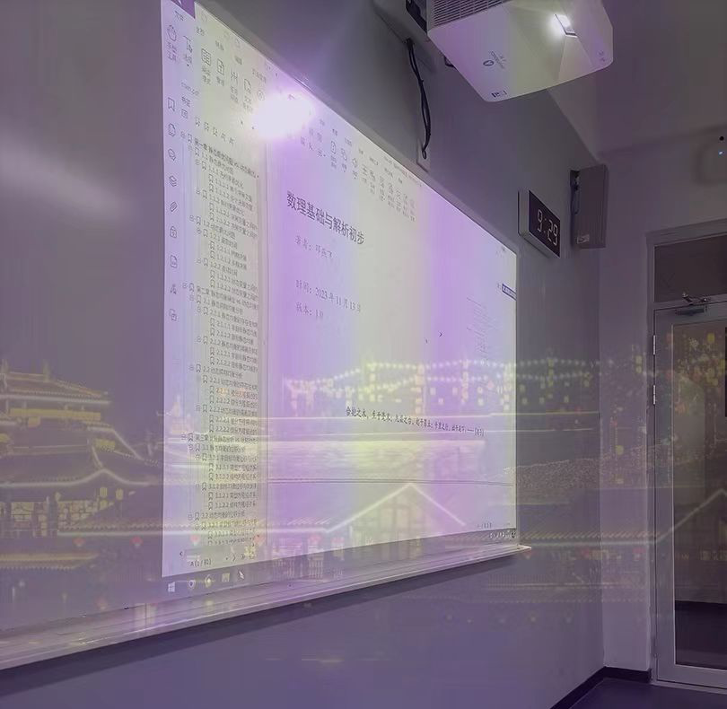

Biography
Yanfei Deng is a lecturer of Economics at Zhejiang University of Finance & Economics. Before, he worked at Fudan University as a Postdoctoral Fellow in macroeconomic theories. Lecturer Deng received his PhD from East China Normal University, and graduated from Peking University with a master degree in economics, and Southwest Jiaotong University with a bachelor degree.
Education
Employment
- 2021.01- Lecturer, School of Economics, Zhejiang University of Finance & Economics
- 2024.06- A Dedicated Deputy Position in the Propaganda Department of the Party Committee of ZUFE (校党委宣传部专聘副职).
- 2018.12-2020.12 Postdoctoral Fellow, Department of Economics, Fudan University (Advisor: Prof. Jun Zhang)
- 2009.07-2014.09 Academic Secretary, Research Center of Modern Finance, Antai College of Economics & Management, Shanghai Jiao Tong University
- 2008.06-2009.07 Worked at a Firm in Wenzhou City, Zhejiang Province
School and Social Welfare Activities
- 2024.06, Talked at the Campus Dormitory Area ("党建进园区、一月一品牌"系列活动之2024年6月).
- 2023.06, Presented at the Economic Lecture Hall (院学生社团经济学会组织的2023年6月经济大讲堂).
Honors and Rewards
- Nominated as one of Excellent Teachers in ZUFE for the 2023-2024 School Year (推荐为校优秀教师, 2023-2024学年).
- Presented at the Teaching Innovation Competition in ZUFE [Innovation Report] [Slides] [iChat] (第四届教师教学创新大赛分获一、二等奖).
Language
- Chinese Mandarin (native); English (fluent)
Full Curriculum Vitae
{kind=link}